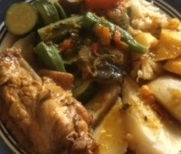

I have to admit that I love cooking. I cook almost everyday so it is only fitting that I should have a website that commemorates my favorite recipes. After all, I come from the Nature Island of the Caribbean - Dominica and I was raised by a mom who cooks everyday. Besided, it is healthier to cook at home than to eat out because you have complete control over what is being cooked in terms of choosing healthy ingredients and knowing what is better andmore interesting for your family. Cooking is also a good hobby and it allows you to spend time with your family and ot entertain and please your family and friends.
Cooking is not difficult. Everyone has taste, even if they don't realize it. Even if you're not a great chef, there's nothing to stop you understanding the difference between what tastes good and what doesn't. Gerard Depardieu
